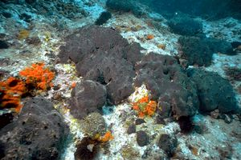

Рассмотрим некоторых представителей этой категории.
Туалетная губка.
Туалетная губка является гермафродитом и может размножаться как почкованием, так и половым путём. Живая губка имеет тёмно-серый цвет, после высыхания она становится жёлтой или коричневой. Личинки губки являются свободно плавающими, однако на поздних стадиях развития они прикрепляются к морскому дну или другой подходящей поверхности. Губки растут довольно медленно: для того, чтобы губка достигла размера 20 см, может потребоваться до 40 лет. Добыча губок привела к уменьшению численности их популяции.

Clathrina coriacea.
Губка белого цвета или с жёлтыми вставками, диаметром до 3 см. Обитают вдоль побережья Восточной Атлантики от Арктики до Южной Африки. Живут в основном на мелководьях, но фиксировались и на глубинах до 650 м. Субстрат обычно каменистый.
Homaxinella subdola.
Морская губка из отряда Suberitida класса обыкновенных губок. Имеет разветвлённую, часто стебельчатую форму. Толщина ветвей 2—6 мм, высота губки до 20 см. Она гибкая и прочная, с гладкой ровной поверхностью оранжевого или желтоватого цвета. Встречается на глубинах от 22 до 245 м в Тихом океане в Японском, Охотском и Беринговом морях, также у Курильских островов и в северной части Атлантического океана.